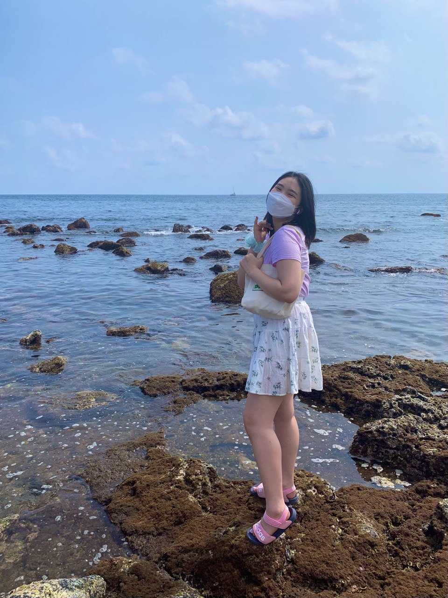
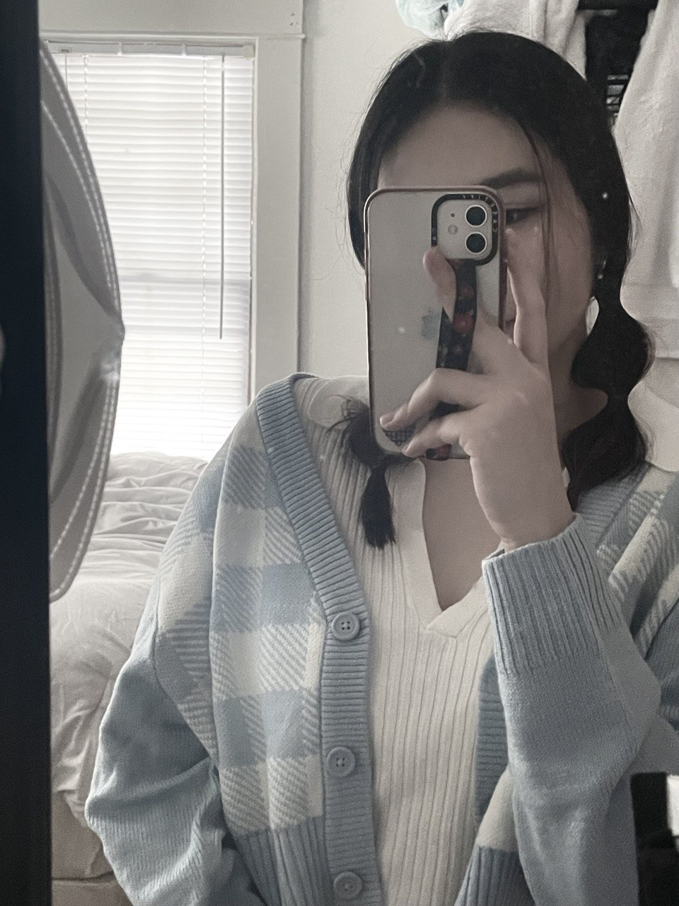
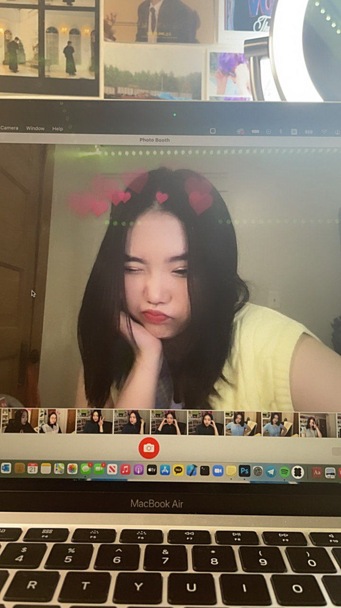
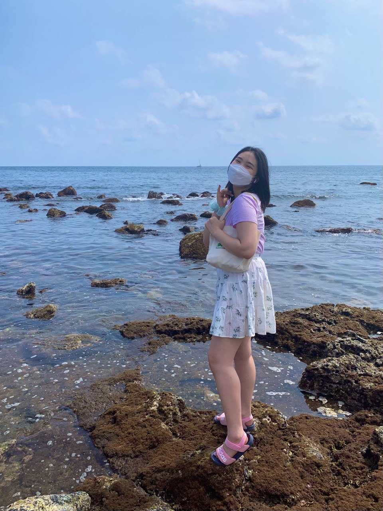
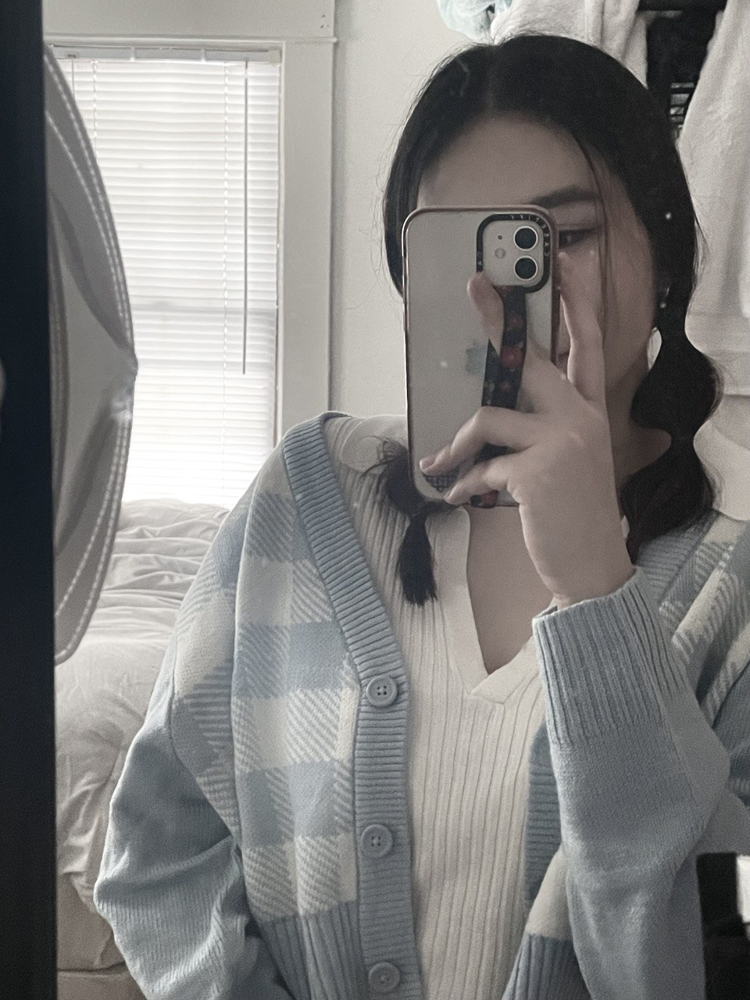
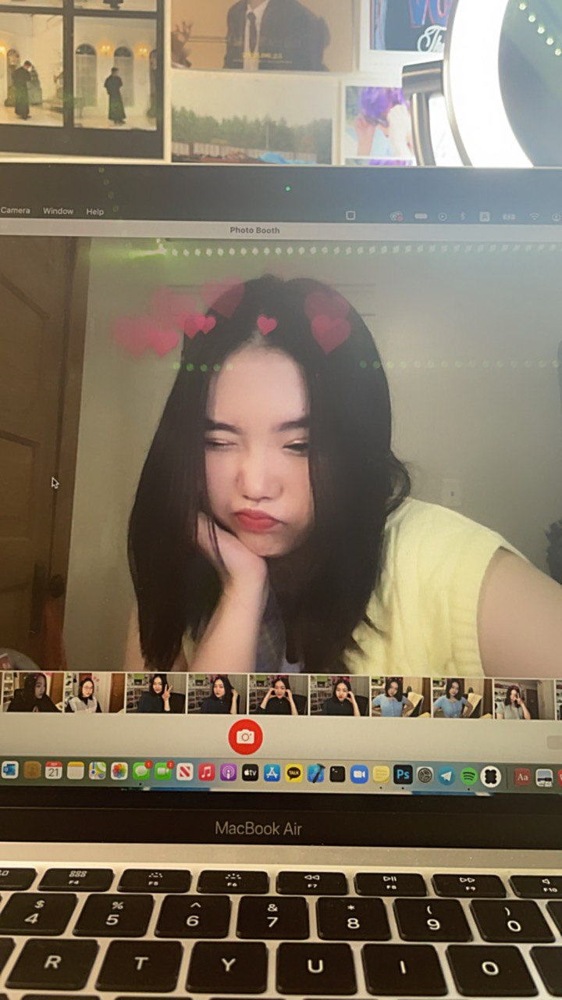

Evelyn's Passions Preserved.
This website covers all of Evelyn's random interests. Visit each page to learn more about them.
 






About
My name is Evelyn Ahn. I am a junior studying UX design at the University of Michigan. This website is dedicated to my random interests. Some of these interests were recently developed while some of them have been something that I have liked for a long time. I hope you are able to learn something interesting from these!

Fruit Preservation Methods
As a college student living by myself, I find that whenever I buy fruits, I am only able to eat around half of them before they go bad. My solution to this was either to freeze my fruits or make jam. This piqued my curiosity and I did a deep dive into the different types of fruit preservation methods. What are the differences between a jam, jelly, and a confit? Learn about the different preservation methods of fruits below.
Differences
Grammatical Errors
I took an unexpected interest in grammar. I started learning English in 2nd grade and took great efforts to minimize my grammar mistakes. This helped me out a lot when taking the ACT. When taking a linguistics class called epic grammar fails, I quickly learned that I have a list of grammar mistakes that I consider to be my pet peeves.
Grammar Pet Peeves